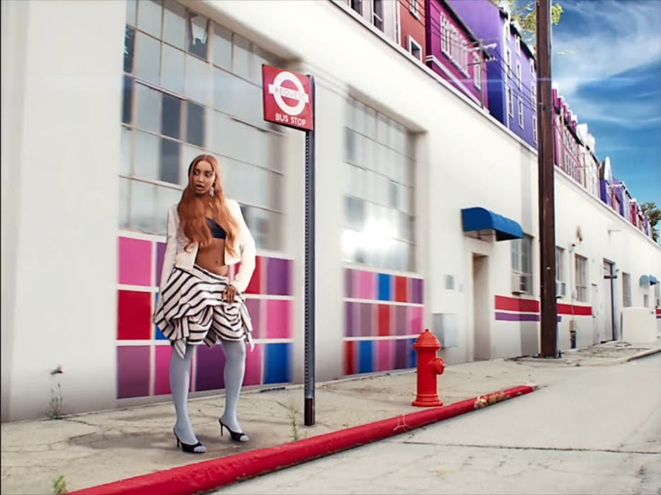
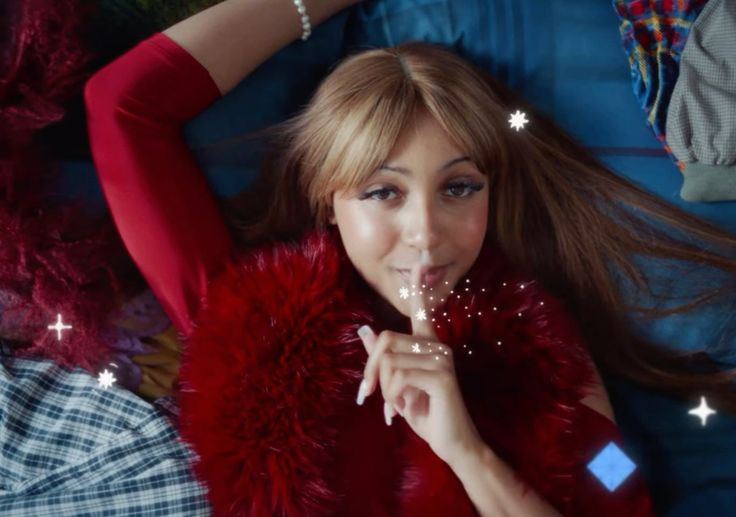
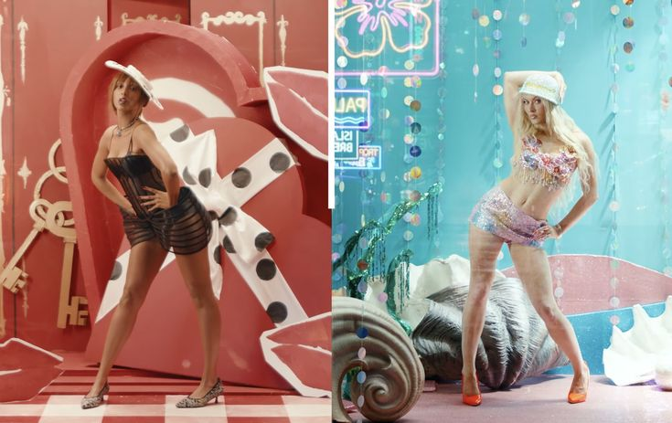
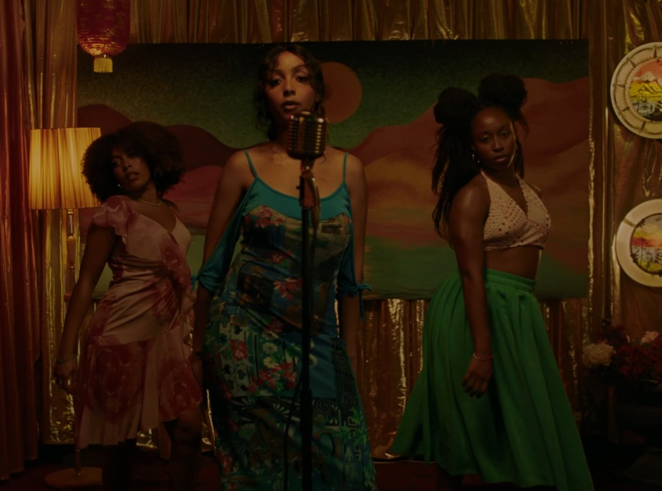
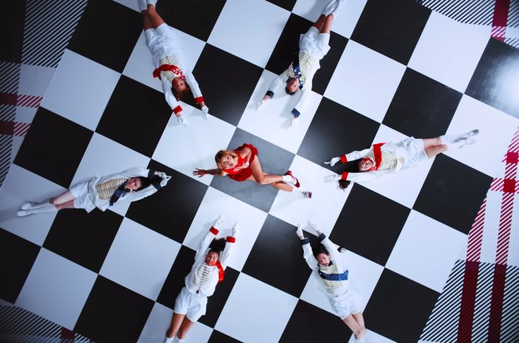
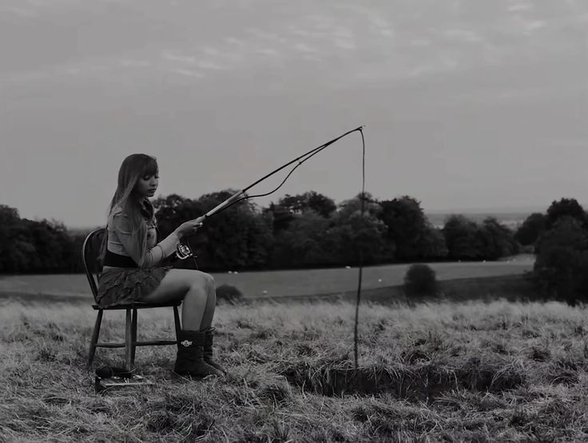
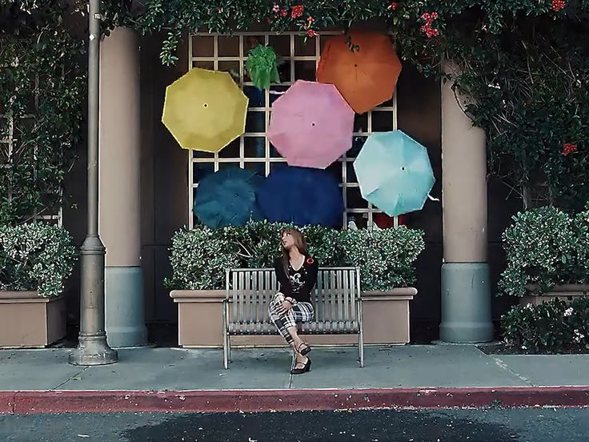
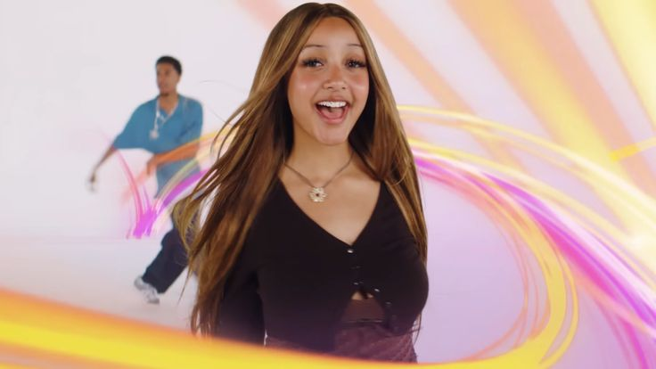
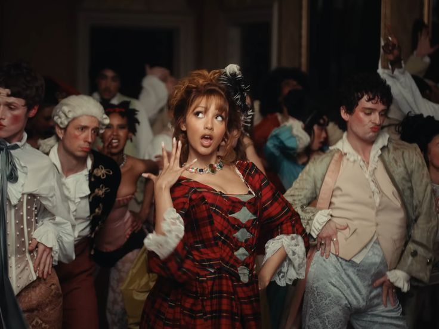

Sobre a PinkPantheress!
PinkPantheress é uma artista britânica que ganhou destaque no cenário musical contemporâneo ao misturar elementos de pop, drum and bass e música eletrônica de forma única e inovadora. Sua sonoridade curta, delicada e nostálgica conquistou principalmente o público jovem nas redes sociais, como o TikTok, onde suas músicas viralizaram rapidamente. Com letras introspectivas e muitas vezes melancólicas, ela aborda temas como relacionamentos, sentimentos e experiências pessoais, criando uma forte conexão emocional com seus ouvintes. Sua estética minimalista e produção lo-fi ajudaram a redefinir tendências dentro do pop moderno, influenciando outros artistas a explorarem sons mais experimentais e menos convencionais. Além disso, PinkPantheress contribui para a diversidade na música pop ao trazer referências da cultura britânica e de gêneros menos mainstream. Seu impacto mostra como novas plataformas digitais podem revelar talentos e transformar completamente a indústria musical atual.
Girl Like Me

Illegal

Sateaside + Zara Larsson

Do You Miss Me?

Romeo

Capable of Love

Stateaside

Nice to Meet You

Tonight
